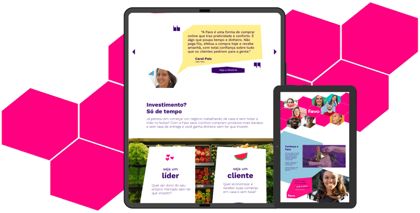
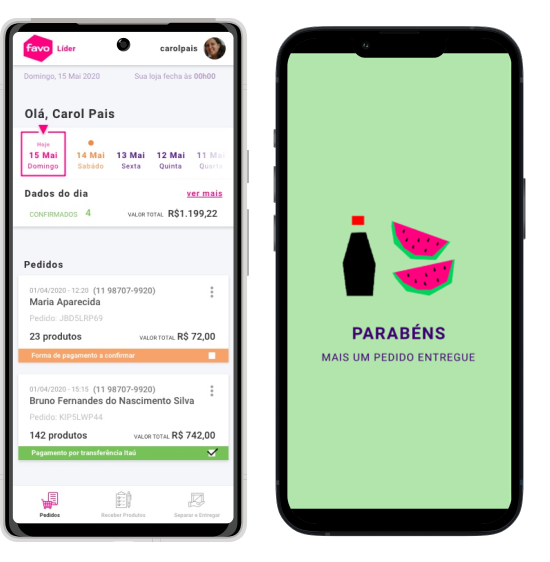

A door-to-door sales model, rebuilt for WhatsApp.
Favo, originally launched as Aiyu, reimagined the door-to-door sales model for the twenty-first century. It empowered local entrepreneurs to sell supermarket products to their neighbors through curated WhatsApp catalogs — orders collected through the day, fulfilled by a central hub overnight, delivered the next morning by the same network of local resellers.
The model worked. 700,000 orders shipped in the first year. Investment landed from Global Founders Capital and Elevar Equity. The mission was clear: simplify grocery shopping, make it cheaper, and humanize it through community — reducing cost for buyers while creating income in underserved regions across Latin America.

Lead designer for brand, product, and the operations behind both.
I led design at Favo for a year and a half. The remit covered brand management, communications, and product design for the company’s core surfaces — the reseller-facing app where local entrepreneurs ran their catalogs, plus a set of internal dashboards we built rather than bought.
Four challenges shaped the work. The rebrand had to land a new identity that resonated with community-driven commerce while holding up across Brazil and Peru’s very different shopping cultures. The communication strategy had to align voice across both customers and resellers without sounding corporate. The partner app had to work for users with limited digital fluency while supporting heavy logistics behind the scenes. And the internal tools — the call we made to build a custom PIM and WMS rather than license off-the-shelf software — had to integrate with our infrastructure without becoming a maintenance burden.
“Aiyu was a company doing real work with no name to match. The rebrand wasn’t cosmetic — it was rebuilding the brand to carry the operation it had grown into.”
I ran over a thousand interviews and surveys across both countries. The pattern was consistent: people wanted direct sales and entrepreneurship, but didn’t know how to take the first step. Existing apps had logistics tools or storefronts — never both, never holistically. The opportunity was there. The brand and the surfaces had to earn it.
From Aiyu, to Favo.
The transition wasn’t just a name change. Aiyu’s identity had grown unevenly — inconsistent across touchpoints, with messaging that didn’t convey what the company actually did. The name itself didn’t resonate. The visual language read as outdated against the modern, community-driven ethos the company aspired to.
We chose Favo — Portuguese for honeycomb — to anchor the new identity in the bee-hive metaphor: neighbors supporting neighbors through collective buying power. Trust, accessibility, and the human connection at the center of the model.
Click to compare. The wordmark, color system, and personality all shifted in lockstep.
The rebrand reached every surface — digital interfaces, print, the warehouse, the reseller’s phone screen — aligned through a single system. As part of the transformation I led product design for the reseller-facing experience plus the internal PIM and WMS we built from scratch, embedding the new ethos into every touchpoint of the operation.


The numbers came out the other side.
The rebrand and the redesigned surfaces shipped in lockstep. Within the first year post-rebrand, Favo’s active customer base grew from 160,000 to 1.2 million — a 650% expansion against an initial 30% target. Active community entrepreneurs grew from a thousand to thirteen thousand in the same window. Net Promoter Score moved from 63 to 77 in the first three months and reached 86 by the end of the year. The company entered two new markets — São Paulo and Lima — and lifted market share by 10%.
The rebrand was praised externally and internally — but the receipts that mattered were the ones the operation generated quarter after quarter. Working with Favo was a transformative experience: a project with social impact, a brand that carried it, and a product that didn’t get in the way.